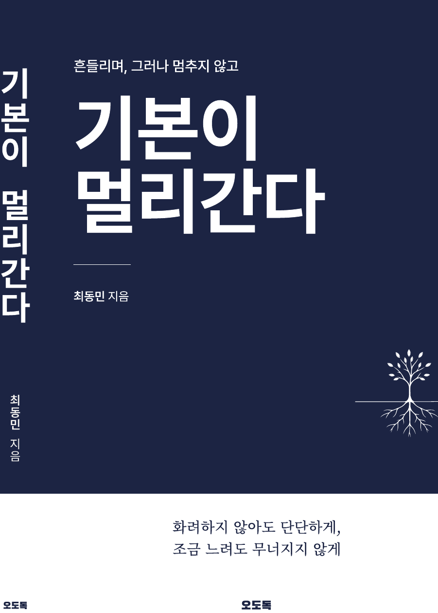

ODODOK
화려한 기술보다
오래가는 기본.
THE QUESTION
당신의 기본은
무엇입니까?
WHY ODODOK
사람은 기본을 몰라서 놓치는 것이 아닙니다.
익숙해서 잊고,
눈에 보이는 결과를 쫓느라 지나칩니다.
WE BELIEVE
우리는 믿습니다.
기본은 눈에 잘 띄지 않지만,
가장 오래 남습니다.
OUR PURPOSE
우리는 기본을 가르치지 않습니다.
기본이 왜 중요한지를
스스로 깨닫는 경험을 만듭니다.
THE FIRST BOOK
기본이
멀리 간다.
흔들려도, 그러나 멈추지 않고.

TODAY'S BASIC
기본은 당연해서 잊고,
결과는 눈에 보여서 쫓습니다.
ODODOK
익숙함 속에서 잊고 있던 기본의 가치를
다시 깨닫게 합니다.
CONTACT